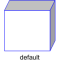
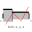
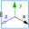
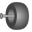

ShapeVisualizing an elementary object with variable size; all data have to be set as modifiers (see info layer) |

|
Information
This information is part of the Modelica Standard Library maintained by the Modelica Association.
Model Shape defines a visual shape that is shown at the location of its reference coordinate system, called 'object frame' below. All describing variables such as size and color can vary dynamically (with the only exception of parameter shapeType). The default equations in the declarations should be modified by providing appropriate modifier equations. Model Shape is usually used as a basic building block to implement simpler to use graphical components.
The following shapes are supported via
parameter shapeType (e.g., shapeType="box"):

The dark blue arrows in the figure above are directed along
variable lengthDirection. The light blue arrows are directed
along variable widthDirection. The coordinate systems
in the figure represent frame_a of the Shape component.
Additionally, external shapes can be specified as (not all options might be supported by all tools):
- "1", "2", …
define external shapes specified in DXF format in files "1.dxf", "2.dxf", … The DXF-files must be found either in the current directory or in the directory where the Shape instance is stored that references the DXF file. This (very limited) option should not be used for new models. Example:
shapeType="1". - "modelica://<Modelica-name>/<relative-path-file-name>"
characterizes the file that is stored under the location of the <Modelica-name> library path with the given relative file name. Example:
shapeType = "modelica://Modelica/Resources/Data/Shapes/Engine/piston.dxf". - "file://<absolute-file-name>"
characterizes an absolute file name in the file system. Example:
shapeType="file://C:/users/myname/shapes/piston.dxf".
The supported file formats are tool dependent. Most tools support at least DXF-files but may support other format as well (such as stl, obj, 3ds). Since visualization files contain color and other data, the corresponding information in the model is usually ignored. For information about DXF files, see Wikipedia. As a default it is assumed that the DXF coordinates are in the "frame_a"-system and in meters, and that the 3dfaces are two-sided. Some tools support only 3dface (for geometry) and layer (for advanced coloring).
The sizes of any of the above components are specified by the length, width and height variables. Via variable extra additional data can be defined:
| shapeType | Meaning of parameter extra |
|---|---|
| "cylinder" | if extra > 0, a black line is included in the cylinder to show the rotation of it. |
| "cone" | extra = diameter-left-side / diameter-right-side, i.e., extra = 1: cylinder extra = 0: "real" cone. |
| "pipe" | extra = outer-diameter / inner-diameter, i.e, extra = 1: cylinder that is completely hollow extra = 0: cylinder without a hole. |
| "gearwheel" | extra is the number of teeth of the (external) gear. If extra < 0, an internal gear is visualized with |extra| teeth. The axis of the gearwheel is along "lengthDirection", and usually: width = height = 2*radiusOfGearWheel. |
| "spring" | extra is the number of windings of the spring. Additionally, "height" is not the "height" but 2*coil-width. |
| external shape | extra = 0: Visualization from file is not scaled. extra = 1: Visualization from file is scaled with "length", "width" and "height" of the shape |
Parameter color is a vector with 3 elements, {r, g, b}, and specifies the color of the shape. {r, g, b} are the "red", "green" and "blue" color parts. Note, r, g, b are given as Integer[3] in the ranges 0 … 255, respectively. The predefined type MultiBody.Types.Color contains a menu definition of the colors used in the MultiBody library together with a color editor.
The dialog variables shapeType, R, r, r_shape,
lengthDirection, widthDirection, length, width,
height, extra, color, and specularCoefficient
are declared as (time varying) input variables.
If the default equation is not appropriate, a corresponding
modifier equation has to be provided in the
model where a Shape instance is used, e.g., in the form
Visualizers.Advanced.Shape shape(length = sin(time));
Parameters (1)
| shapeType |
Value: "box" Type: ShapeType Description: Type of shape (box, sphere, cylinder, pipecylinder, cone, pipe, beam, gearwheel, spring, |
|---|
Inputs (11)
| R |
Default Value: Frames.nullRotation() Type: Orientation Description: Orientation object to rotate the world frame into the object frame |
|---|---|
| r |
Default Value: {0, 0, 0} Type: Position[3] (m) Description: Position vector from origin of world frame to origin of object frame, resolved in world frame |
| r_shape |
Default Value: {0, 0, 0} Type: Position[3] (m) Description: Position vector from origin of object frame to shape origin, resolved in object frame |
| lengthDirection |
Default Value: {1, 0, 0} Type: Real[3] Description: Vector in length direction, resolved in object frame |
| widthDirection |
Default Value: {0, 1, 0} Type: Real[3] Description: Vector in width direction, resolved in object frame |
| length |
Default Value: 0 Type: Length (m) Description: Length of visual object |
| width |
Default Value: 0 Type: Length (m) Description: Width of visual object |
| height |
Default Value: 0 Type: Length (m) Description: Height of visual object |
| extra |
Default Value: 0.0 Type: ShapeExtra Description: Additional size data for some of the shape types |
| color |
Default Value: {255, 0, 0} Type: Real[3] Description: Color of shape |
| specularCoefficient |
Default Value: 0.7 Type: SpecularCoefficient Description: Reflection of ambient light (= 0: light is completely absorbed) |
Outputs (7)
| Form |
Type: Real |
|---|---|
| rxvisobj |
Type: Real[3] Description: x-axis unit vector of shape, resolved in world frame |
| ryvisobj |
Type: Real[3] Description: y-axis unit vector of shape, resolved in world frame |
| rvisobj |
Type: Position[3] (m) Description: position vector from world frame to shape frame, resolved in world frame |
| size |
Type: Length[3] (m) Description: {length,width,height} of shape |
| Material |
Type: Real |
| Extra |
Type: Real |
Components (1)
| R |
Type: Orientation Description: Orientation object to rotate the world frame into the object frame |
|---|
Used in Components (38)
|
Modelica.Mechanics.MultiBody World coordinate system + gravity field + default animation definition |
|
|
Modelica.Mechanics.MultiBody.Forces Force acting between two frames, defined by 3 input signals and resolved in frame world, frame_a, frame_b or frame_resolve |
|
|
Modelica.Mechanics.MultiBody.Forces Torque acting between two frames, defined by 3 input signals and resolved in frame world, frame_a, frame_b or frame_resolve |
|
|
Modelica.Mechanics.MultiBody.Forces Force and torque acting between two frames, defined by 3+3 input signals and resolved in frame world, frame_a, frame_b or frame_resolve |
|
|
Modelica.Mechanics.MultiBody.Forces General line force component with an optional point mass on the connection line |
|
|
Modelica.Mechanics.MultiBody.Forces General line force component with two optional point masses on the connection line |
|
|
Modelica.Mechanics.MultiBody.Forces Linear (velocity dependent) damper |
|
|
Modelica.Mechanics.MultiBody.Forces Linear spring and linear damper in parallel |
|
|
Modelica.Mechanics.MultiBody.Forces Linear spring and linear damper in series connection |
|
|
Modelica.Mechanics.MultiBody.Joints Prismatic joint (1 translational degree-of-freedom, 2 potential states, optional axis flange) |
|
|
Modelica.Mechanics.MultiBody.Joints Revolute joint (1 rotational degree-of-freedom, 2 potential states, optional axis flange) |
|
|
Modelica.Mechanics.MultiBody.Joints Revolute joint that is described by 2 positional constraints for usage in a planar loop (the ambiguous cut-force perpendicular to the loop and the ambiguous cut-torques are set arbitrarily to zero) |
|
|
Modelica.Mechanics.MultiBody.Joints Cylindrical joint (2 degrees-of-freedom, 4 potential states) |
|
|
Modelica.Mechanics.MultiBody.Joints Planar joint (3 degrees-of-freedom, 6 potential states) |
|
|
Modelica.Mechanics.MultiBody.Joints Spherical joint (3 constraints and no potential states, or 3 degrees-of-freedom and 3 states) |
|
|
Modelica.Mechanics.MultiBody.Joints Spherical - spherical joint aggregation (1 constraint, no potential states) with an optional point mass in the middle |
|
|
Modelica.Mechanics.MultiBody.Joints Universal - spherical joint aggregation (1 constraint, no potential states) |
|
|
Modelica.Mechanics.MultiBody.Joints.Assemblies Universal - prismatic - spherical joint aggregation (no constraints, no potential states) |
|
|
Modelica.Mechanics.MultiBody.Joints.Assemblies Planar revolute - revolute - revolute joint aggregation (no constraints, no potential states) |
|
|
Modelica.Mechanics.MultiBody.Joints.Assemblies Planar revolute - revolute - prismatic joint aggregation (no constraints, no potential states) |
|
|  |
Modelica.Mechanics.MultiBody.Joints.Constraints Prismatic cut-joint and translational directions may be constrained or released |
|
Modelica.Mechanics.MultiBody.Joints.Constraints Revolute cut-joint and translational directions may be constrained or released |
|
|
Modelica.Mechanics.MultiBody.Joints.Constraints Spherical cut joint and translational directions may be constrained or released |
|
|
Modelica.Mechanics.MultiBody.Joints.Internal Revolute joint where the rotation angle is computed from a length constraint (1 degree-of-freedom, no potential state) |
|
|
Modelica.Mechanics.MultiBody.Joints.Internal Prismatic joint where the translational distance is computed from a length constraint (1 degree-of-freedom, no potential state) |
|
|
Modelica.Mechanics.MultiBody.Parts Frame fixed in the world frame at a given position |
|
|
Modelica.Mechanics.MultiBody.Parts Fixed translation of frame_b with respect to frame_a |
|
|
Modelica.Mechanics.MultiBody.Parts Fixed translation followed by a fixed rotation of frame_b with respect to frame_a |
|
|
Modelica.Mechanics.MultiBody.Parts Rigid body with mass, inertia tensor and one frame connector (12 potential states) |
|
|
Modelica.Mechanics.MultiBody.Parts Rigid body with mass, inertia tensor, different shapes for animation, and two frame connectors (12 potential states) |
|
|
Modelica.Mechanics.MultiBody.Parts Rigid body where body rotation and inertia tensor is neglected (6 potential states) |
|
|
Modelica.Mechanics.MultiBody.Parts 1D inertia attachable on 3-dim. bodies (3D dynamic effects are taken into account if world.driveTrainMechanics3D=true) |
|
|
Modelica.Mechanics.MultiBody.Parts.Rotor1D 1D inertia attachable on 3-dim. bodies (3D dynamic effects are taken into account) |
|
|
Modelica.Mechanics.MultiBody.Visualizers Visualizing an elementary shape with dynamically varying shape attributes (has one frame connector) |
|
|
Modelica.Mechanics.MultiBody.Visualizers Visualizing an elementary shape with dynamically varying shape attributes (has two frame connectors) |
|
|  |
Modelica.Mechanics.MultiBody.Visualizers Visualizing a coordinate system including axes labels (visualization data may vary dynamically) |
|  |
Modelica.Mechanics.MultiBody.Visualizers Visualizing a voluminous wheel |
|
Modelica.Mechanics.MultiBody.Visualizers.Internal Visualizing a set of lines as cylinders with variable size, e.g., used to display characters (no Frame connector) |